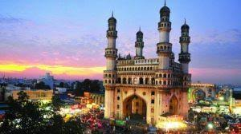

'South of North and North of South,' Telangana State has long been a meeting place for diverse languages and cultures. It is easily the best example for India's composite culture, pluralism and inclusiveness. Telangana is famous world-wide for its amazing Bronze castings that require exquisite skills for creating incredible idols. Nirmal town is world-famous for its varied range of handicrafts made using best traditional techniques to create masterpieces.Telangana has a pleasing climate, with abundant natural and water resources. The state is the gateway to Krishna and Godavari Rivers in South India and is considered the seed capital of India. One of the wealthy economies in India, Telangana is here to take its rightful place in the country, as a highly developed state and society with a proud history and grand heritage. Telangana apart from the historical perspective of various dynastic and regional and cultural influences offers its visitors a plethora of places of pristine natural beauty. With serene lakes, verdant woods, rocky regions, abundant wildlife, flora and fauna, elaborately carved temples, magnificent palaces and forts reflecting architectural blends of Hindu, Pathan and Persian styles. The artistic temper of the local people finds expression in the varied art forms of the different tribes and regions of Telangana in paintings, handicrafts in wood and metal and textile of International repute. Telangana is not only famous for its beautiful spots, but it is also known for its delicious cuisine. Some of the popular dishes in Telangana are Pesarattu, Chepa Pulusu, Curd Rice, Hyderabadi biryani, and Gongura Pickle Ambadi.